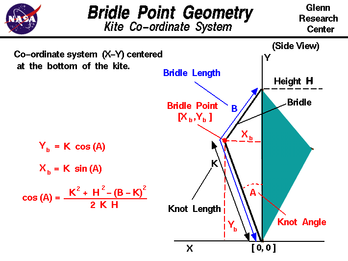
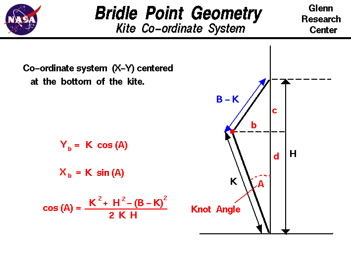

|

An excellent way to gain an understanding and a feel for
the interaction of
forces
on an object is to
fly
a kite.
Kite flying is fun when done
safely
and you can study many of the fundamentals of airplane
aerodynamics
because a kite works very much like an airplane.
There are, however, some important differences in the response of
a kite to external forces that do not occur in an airplane. An airplane
in flight
rotates
about its
center of gravity which is the
average location of the weight of all the parts of the airplane.
A kite in flight does not rotate about its
center of gravity because
it is pinned by the
bridle
to the
control line.
In flight, the kite rotates about the
bridle point
which is the place where the line is
attached to the bridle.
(A kite in flight
is more closely related to a hinged door than to an airplane in flight.
The center of gravity of a hinged door is in the center of the
door, but the door rotates about the hinges.)
The location of the bridle point relative to the center of gravity (cg) and
center of pressure (cp)
determines the balance of
torques
on the kite and the
trim angle
at which the kite flies. On this page we show you how to compute the
location of the bridle point.
We have an installed an X-Y co-ordinate system on the kite with
the origin at the bottom of the kite; the Y-axis is along the
height H of the kite, the X-axis is perpendicular to the Y-axis
and goes through the bottom of the kite. The X-axis is used as the
reference line in the computation of cg and cp.
The length of the bridle is called B and is measured from the
origin to the top of the kite along the bridle string.
The bridle is attached to the control line with a knot. The distance from
the knot to the origin is length K.
The knot (bridle point) is inclined at an angle to Y-axis which is
called the knot angle A.
The co-ordinates of the bridle point are Xb and Yb and from
trigonometry:
Yb = K * cos(A)
Xb = K * sin(A)
where cos and sin are the trigonometric cosine
and sine
functions.
To determine the angle A, we need to do a little algebra.
Here's a sketch of the bridle geometry with some auxiliary lines drawn in:

We have split the triangle formed by the bridle into two right triangles.
From the definition of cosine, we have:
Eq. 1: cos(A) = d / K
We need to find the value of d. From the construction we have:
Eq. 2: c + d = H
And from the
Pythagorean Theorem
applied to both triangles:
Eq. 3: K^2 = d^2 + b^2
Eq. 4: (B - K)^2 = c^2 + b^2
Eliminate b^2 from these two equations by subtracting Eq. 4 from
Eq. 3.:
K^2 - (B - K)^2 = d^2 - c^2
Now substitute for c from Eq. 2:
K^2 - (B - K)^2 = d^2 - (H - d)^2
K^2 - (B - K)^2 = d^2 - (H^2 - 2 * H * d + d^2)
K^2 - (B - K)^2 = - H^2 + 2 * H * d
Eq. 5 : [K^2 - (B - K)^2 + H^2] / (2 * H) = d
Now substitute the value of d in Eq. 5 into Eq. 1:
cos(A) = [K^2 + H^2 - (B - K)^2] / (2 * K * H)
The
KiteModeler
computer program can be used to calculate the various geometric variables
described on this page and their effects on kite performance.
Activities:
Guided Tours
Navigation ..


- Beginner's Guide Home Page
|